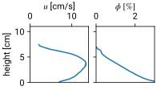

Unraveling the complexity of geophysical systems
using idealized analogue configurations
Institut de Mécanique des Fluides de Toulouse (IMFT), France
Academic background in short
PhD on sand dunes (IPGP/PMMH, 2017–2020)

PostDoc on turbidity currents (IMFT, 2021–2022)

PostDoc on the clogging of riverbeds (IMFT, 2023)

PostDoc on the self-organization of cohesive granular flows (Manchester)

Sand dunes as a complex system


What controls the patterns/shapes, and associated dynamics?
A conceptual model for sand dunes emergence


- Under a unidirectional wind:
- periodic ridges
- perpendicular to wind direction
- \(\lambda_{\rm max} \sim 15~\textrm{m}\), \(\lambda_{\rm c} \sim 10~\textrm{m}\) (eolian, earth)
\(\rightarrow\) Direct validation?
Direct validation from field data
Tenger desert, China

White Sands dune field, USA

Hardly controllable \(\rightarrow\) difficult to study specific parameters \(\rightarrow\) need for controllable analogue systems!
An analogue subaqueous experiment
- aeolian dunes: \(\lambda_{\rm min} \sim 10~{\rm m}\) \(\rightarrow\) impossible in the lab!
- \(L_{\rm subaqueous} \sim \frac{\rho_{\rm air}}{\rho_{\rm water}} L_{\rm eolian}\) \(\rightarrow\) possible!

only analogue to eolian dunes, i.e fluid viscosity is different (hydrodynamic, \(\mathcal{R}e_{\rm p}\), transport modes)!
An analogue subaqueous experiment
\(\rightarrow\) Pattern orientation as a function of the flow orientations:

\(\rightarrow\) Pattern wavelength as a function of the flow velocity:
An analogue cellular automaton model for more complex configurations
\(\rightarrow\) Shape of a sand pile under unimodal wind regimes

\(\rightarrow\) Downwind side of a sand patch
In a nutshell
Linear dune properties
Orientation = \(\mathcal{F}({\rm wind~sequence}, {\rm sediment~properties}, {\rm sand~cover})\)

Using dune physics to interpret desert systems


Modern winds can explain all dune orientations!
- Orientation = \(\require{cancel} \mathcal{F}(\underbrace{\rm wind~sequence}_{?}, \cancel{\rm sediment~properties}, \underbrace{\rm sand~cover}_{\rm 2~orientations})\)
Three dune orientations?
Paleo-winds (big dunes) vs Modern winds (small dunes)
Particle-laden gravity (turbidity) currents
Almost always destructive natural hazards.

Hence, reliable modeling is needed!
\(\rightarrow\) determination of relevant processes and associated regimes
Particle-laden gravity currents as a complex system


In a nutshell
Internal structure, particle buoyancy and particle/turbulence interaction


Riverbeds as a complex system

A simplified analogue experiment

A simplified analogue experiment
- injection:
- flow rate, \(Q\)
- volume fraction, \(\phi_{0}\)
- particle properties:
- density \(\rho_{\rm p}\)
- size \(d_{\rm p}\)
- porous matrix:
- hydrogel bead size \(d_{\rm h}\)
- Settling: \(\mathcal{P} = \displaystyle\frac{\textrm{settling}}{\textrm{turbulence}}\)
- Infiltration: \(\mathcal{I} = \displaystyle\frac{d_{\rm p}}{d_{\rm h}}\)
- …